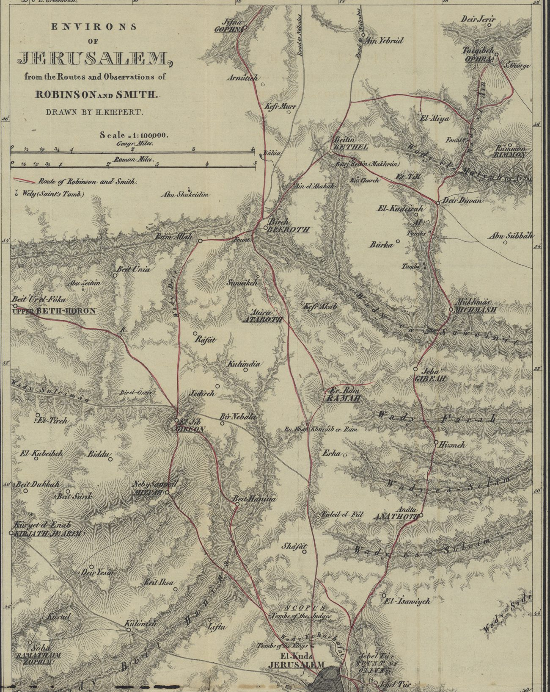

„Araber“ ist ein Wort für eine Sprache und Kultur, nicht für eine Abstammung. Die Palästinenser sprechen Arabisch und verstehen sich auch selbst als Teil der arabischen Welt – ihre Vorfahren aber lebten zum weit überwiegenden Teil schon in der Bronzezeit in der Levante. Alte DNA zeigt: Die Bevölkerung des Landes wurde nie ausgetauscht – weder durch die Philister noch durch die Römer noch durch die arabische Eroberung. Diese brachte Sprache und Religion und einen kleineren, messbaren Zustrom von Menschen. Das Land war nie „leer“ – seine Menschen waren immer da.
„Ein Land ohne Volk“? Die Genetik sagt: Die Menschen waren immer da
Der Satz „Ein Land ohne Volk für ein Volk ohne Land“ war einer der wirksamsten Slogans des Zionismus. Die alte DNA widerlegt ihn von einer Seite, von der man es nicht erwartet: Sie zeigt eine ununterbrochene Besiedlung durch dieselbe Bevölkerung seit der Bronzezeit – über die Herrschaft von Ägyptern, Assyrern, Babyloniern, Persern, Griechen, Römern, Byzantinern, Arabern, Kreuzfahrern, Mamluken und Osmanen hinweg. Die Herrscher wechselten, die Menschen blieben. Ein Land, dessen Bewohner nachweislich seit 4.000 Jahren dort leben, war nie leer – und die Palästinenser, die 1948 vertrieben wurden, waren die Nachfahren dieser Menschen.
- 1„Ein Land ohne Volk“ – im 19. Jahrhundert von christlichen Zionisten geprägt, 1901 von Israel Zangwill verbreitet („The Return to Palestine“, New Liberal Review, Dezember 1901, S. 615; zur Herkunft der Formel Diana Muir, Middle East Quarterly 15/2, 2008).
Prüfung: widerlegt → Belege 1, 2 und 5 rechts. - 2„Wir haben die Wüste zum Blühen gebracht“ – das Land sei vor der zionistischen Einwanderung verödet gewesen. Die Gründungserklärung Israels vom 14.5.1948 sagt über die Pioniere: „they made deserts bloom“.
Prüfung: irreführend Dass zionistische Siedlungen einzelne Flächen urbar machten, trifft zu; das Land als Ganzes war aber bestellt und exportierte → Belege 3 und 5 rechts. - 3„Die Araber sind erst mit dem Zionismus eingewandert“ – so Joan Peters 1984 (From Time Immemorial), angelockt von Arbeit und Wohlstand.
Prüfung: widerlegt Yehoshua Porath wies dem Buch einseitige und tendenziöse Quellenarbeit nach („Mrs. Peters's Palestine“, New York Review of Books, 16.1.1986) → Belege 1 und 2 rechts. - 4„Palästinenser sind arabische Eroberer aus dem 7. Jahrhundert“ – Fremde, die auch woanders leben könnten (verbreitete Formel, Hasbara-Prüfung Nr. 8; ein einzelner Urheber wird hier nicht genannt).
Prüfung: widerlegt → Belege 1 und 4 rechts sowie „Araber“: ein Wort für Sprache.
- 1Genetik: Die Bevölkerung wurde nie ausgetauscht. Selbst die Philister, die dem Land den Namen gaben, gingen binnen zwei Jahrhunderten in den Einheimischen auf; die arabische Eroberung brachte Sprache und Religion und eine Beimischung, aber kein neues Volk (→ unten).
- 2Zahlen: In byzantinischer Zeit lebten im Land rund 1 bis 1,5 Millionen Menschen; 1914 rund 797.000 (Justin McCarthy), davon etwa 59.000 Juden; die britische Volkszählung 1922 zählte 757.182 Einwohner (→ Epochen).
- 3Landwirtschaft: Terrassierte Hänge, Olivenhaine, Weizen, Seife aus Nablus, Orangen aus Jaffa – 1938 exportierte Palästina rund 15 Millionen Kisten Zitrusfrüchte, den Großteil aus arabischem Besitz.
- 4Namen, Sprache, Bräuche: Die Dörfer trugen die antiken Ortsnamen, das Arabisch der Bauern bewahrt aramäische Wörter, ihre Heiligtümer stehen auf denselben Höhen (→ drei weitere Zeugen).
- 5Zionisten selbst wussten es: Ahad Ha'am schrieb 1891 nach seiner Reise: „Wir im Ausland sind gewohnt zu glauben, das Land Israel sei heute fast völlig verödet, eine Wüste ohne Saat … Doch in Wahrheit ist es nicht so. Im ganzen Land ist es schwer, bebaubaren Boden zu finden, der nicht schon bebaut ist.“ (Ahad Ha'am, „Wahrheit aus dem Land Israel“, 1891; englisch bei Alan Dowty, Israel Studies 5/2, 2000)
Warum das wichtig ist: Die Erzählung vom leeren Land war nie nur ein Irrtum. Sie machte die Menschen, die dort lebten, unsichtbar – und was unsichtbar ist, kann man nicht vertreiben, so die Logik. Wer „Land ohne Volk“ sagt, muss die Nakba nicht erklären. Die Genetik gibt diesen Menschen ihre Geschichte zurück: Sie waren keine Durchreisenden, keine Zugewanderten des 20. Jahrhunderts und keine „Araber, die auch woanders leben könnten“, sondern die Bevölkerung des Landes.
Mehr dazu in der Hasbara-Prüfung: „Ein Land ohne Volk“ und sieben weitere Gründungsmythen (Behauptungen 1, 2, 7, 8 und 28) · Die Nakba 1948 · Die Juden im Land. Und ausdrücklich: Dieser Befund ist kein Argument gegen jüdische Wurzeln im Land – beide Völker teilen dieselben alten Vorfahren (→ unten).
„Araber“: ein Wort für Sprache, nicht für Abstammung
Vor der arabischen Eroberung 634–640 sprachen die Menschen in Palästina Aramäisch und Griechisch und waren überwiegend Christen, Juden und Samaritaner. In den folgenden Jahrhunderten setzte sich das Arabische als Alltagssprache durch, und ein großer Teil der Bevölkerung trat allmählich zum Islam über. Archäologisch zeigt sich Siedlungskontinuität: Die Dörfer wurden weiterbewohnt, nicht neu besiedelt (Gideon Avni, The Byzantine–Islamic Transition in Palestine, Oxford 2014). Auch die christlichen Gemeinden übernahmen das Arabische, ohne ihre Religion zu wechseln. „Arabisch“ wurde also vor allem, wer Arabisch sprach.
Die Palästinensische Nationalcharta von 1968 spricht vom „arabischen palästinensischen Volk“, das „ein untrennbarer Teil der arabischen Nation“ sei (Art. 1), und definiert Palästinenser als „jene arabischen Staatsangehörigen, die bis 1947 gewöhnlich in Palästina lebten“ (Art. 5; Wortlaut). Arabisch und palästinensisch zu sein ist kein Widerspruch: Das eine beschreibt Sprache und Kultur, das andere ein Volk mit einer Heimat. Problematisch wird das Wort erst, wenn es benutzt wird, um zu behaupten, die Palästinenser seien Fremde im eigenen Land.
Wie das Etikett benutzt wurdeVom „nichtjüdischen Bevölkerungsteil“ zu „Araber, die woanders leben könnten“
Ben-Gurion selbst schrieb in seinem Aufsatz „Zur Herkunft der Fellachen“ (Luach Achiezer, New York 1917, S. 118–127), die palästinensischen Bauern stammten großenteils von der antiken jüdischen Landbevölkerung ab; es gebe „keinen Zweifel, dass viel jüdisches Blut in ihren Adern fließt“ (englisch zitiert nach Judea Pearl, „Early Zionists and Arabs“, Middle East Quarterly 15/4, 2008, Fußnote; nachgedruckt in Ben-Gurions Sammelband Anachnu u-Schchenenu [„Wir und unsere Nachbarn“], Tel Aviv 1931, S. 13–25; das hebräische Original konnte nicht eingesehen werden). Er verfolgte damit damals eine politische Absicht – die These widerspricht aber dem späteren Bild der „eingewanderten Araber“.
Balfour-Erklärung: Die Bevölkerungsmehrheit – rund neun von zehn Einwohnern – erscheint nicht mit Namen, sondern nur als „bestehende nichtjüdische Gemeinschaften in Palästina“, deren „bürgerliche und religiöse Rechte“ gewahrt werden sollen; von politischen Rechten ist keine Rede (Wortlaut).
Golda Meir, Ministerpräsidentin, in der Sunday Times vom 15.6.1969: „Es gab keine Palästinenser.“ (zitiert nach der verbreiteten Wiedergabe; die Original-Zeitungsseite konnte nicht eingesehen werden). → Behauptung Nr. 2 auf der Hasbara-Seite
Joan Peters, From Time Immemorial: Die Araber Palästinas seien großenteils erst mit dem Zionismus eingewandert. Fachhistoriker wie Yehoshua Porath und Norman Finkelstein wiesen nach, dass die Zahlen des Buches manipuliert waren. → Behauptung Nr. 28
Das Muster: Wer die Palästinenser nur „Araber“ nennt, legt nahe, sie gehörten in „die arabischen Länder“ und nicht in ihr eigenes. Die Genetik widerlegt diese Unterstellung – mit Befunden, die im Folgenden Studie für Studie belegt sind.
Wie man die Diagramme liest
- 1Alte DNA (aDNA): Erbgut aus Knochen, meist aus dem Felsenbein des Schädels. Damit lässt sich direkt vergleichen, wer vor 4.000 Jahren lebte und wer heute lebt.
- 2Genom: das gesamte Erbgut eines Menschen. Jeder erbt es je zur Hälfte von Mutter und Vater – nach zehn Generationen stammt es von über tausend Vorfahren.
- 3Grundquelle: eine sehr alte Bevölkerung, die als Bezugspunkt dient – z. B. die ersten Bauern der Levante vor rund 10.000 Jahren („Levant_N“) oder des Zagros-Gebirges im Iran („Iran_N“). Die Farben in den Diagrammen sind solche Grundquellen, keine heutigen Völker.
- 4Beimischung („Admixture“): der Anteil einer später hinzugekommenen Herkunft. Eine Beimischung von 7 % heißt: Etwa 7 % des Erbguts stammen im Mittel aus dieser Quelle.
- 5qpAdm: ein Rechenverfahren, das prüft, ob sich eine Gruppe als Mischung bestimmter Quellen beschreiben lässt, und die Anteile mit Fehlerspanne angibt (z. B. 93 % ± 1,6).
- 6ADMIXTURE-Balken: jeder Mensch eine senkrechte Linie, die Farben sind statistisch gefundene Komponenten. Eine Komponente ist ein Muster, kein Herkunftsnachweis.
- 7Haplogruppe des Y-Chromosoms: eine Familie von Vaterlinien, die vom Vater auf den Sohn fast unverändert weitergegeben wird. Sie zeigt nur einen einzigen Vorfahrenstrang von Tausenden.
- 8Platzhalter: Wo eine Quelle fehlt, nehmen Forscher einen nahen Stellvertreter – „Mota“ etwa ist ein 4.500 Jahre alter Mann aus Äthiopien, der für „Ostafrika“ steht. Prozentwerte sind Modellwerte, keine Stammbaum-Anteile.
Wer die „Kanaaniter“ genetisch waren
Die bisher größte Studie zur Bronzezeit der südlichen Levante (Agranat-Tamir u. a., Cell 2020, Volltext) hat 73 Genome aus Megiddo, Hazor, Yehud, Abel Beth Maacah und Baq'ah ausgewertet. Ergebnis: die Menschen, die in den Quellen „Kanaaniter“ heißen, ähnelten einander stärker als allen anderen – und waren selbst schon eine Mischung, zu 48 bis 57 % aus den ersten Bauern der Levante und zum Rest aus Zuwanderern aus dem Zagros und Kaukasus.
- 1Für heutige arabischsprachige und jüdische Gruppen gilt nach der Studie: Sie sind „vereinbar mit mehr als 50 % nahöstlicher Abstammung“. Das ist eine Untergrenze.
- 2Im Text nennt die Studie keine Werte für Palästinenser; in ihrer Abbildung 5 erscheinen sie aber als eine von 17 heutigen Gruppen: Je nach Rechenverfahren entfallen dort rund 80–89 % auf eine gemeinsame Quelle aus bronzezeitlichem Megiddo und chalkolithischem Iran, etwa 8–12 % auf Ostafrika (Platzhalter: Somali) und etwa 3–8 % auf Europa.
- 3Diese Werte sind aus der Abbildung abgelesen; die genauen Zahlen stehen in Tabelle S4 der Studie, die nicht eingesehen werden konnte. Eine reine „Kanaaniter“-Zahl ist auch das nicht, weil die Abbildung Megiddo und Iran zu einer Quelle zusammenfasst.
Am direktesten belegt ist die Kontinuität für den Libanon. Dort konnte man 3.700 Jahre alte Genome aus Sidon mit heutigen Libanesen vergleichen:
Modell mit 3.700 Jahre alten Genomen
Eigene Darstellung nach Haber u. a. 2017, American Journal of Human Genetics 101/2, Abb. 3C. Die Studie betrifft Libanesen; für Palästinenser gibt es keine vergleichbare Zahl.

Eine spätere Studie aus Beirut (Haber u. a. 2020) zeigt dazu kleinere Zuströme in der Eisenzeit (12–37 % aus Anatolien/Südosteuropa), in hellenistischer Zeit (6–12 % aus Süd- und Zentralasien) und in osmanischer Zeit (Kaukasus) – von den Römern blieb kaum eine Spur. Kein Zustrom hat die Bevölkerung ersetzt.
Was über die Palästinenser selbst belegt ist
Es gibt keine veröffentlichte Zahl „x % der Palästinenser stammen von den Kanaanitern ab“. Keine der großen Studien hat Palästinenser neu beprobt; sie laufen als Vergleichsgruppe aus älteren Datensätzen mit. Wer eine solche Prozentzahl nennt, zitiert falsch. Belegt ist das Folgende.
Ganzes ErbgutDer Grundstock ist levantinisch-westasiatisch
Negev
Eigene Darstellung nach Srigyan u. a. 2022, Communications Biology 5:554, Tabelle 2 (qpAdm-Modell; Fehler je Anteil etwa ±1–4 Prozentpunkte). Lesehilfe: Die Farben sind uralte Grundquellen, keine Völker. Das Modell misst nicht „Kanaaniter“ oder „Araber“ – beide bestehen selbst aus diesen Grundquellen. Es zeigt aber deutlich: Der Grundstock aller Gruppen ist westasiatisch, der Afrika-Anteil der Palästinenser liegt bei rund 6–7 %.

Was dazukamEin messbarer Zustrom aus Arabien und Afrika
Die Studien zeigen bei Palästinensern – wie bei Jordaniern und Syrern – einen Zustrom von der Arabischen Halbinsel und aus Afrika, der bei libanesischen Christen und Drusen kaum vorkommt:
- 1Haber u. a. 2013: Eine Komponente, die in Arabien und Ostafrika vorherrscht, macht bei Palästinensern, Jordaniern und Syrern rund 25 % aus, bei anderen Levantinern 4–20 %. Die genetische Struktur der Levante folgt heute der Religion: Mit dem Islam öffneten sich neue Heiratskreise.
- 2Srigyan u. a. 2022 und Almarri u. a. 2021: Ostafrika-Anteil bei Palästinensern rund 6–7 %, bei Drusen nahe null; der afrikanische Zustrom fällt überwiegend in die letzten 2.000, meist 500 bis 1.000 Jahre (Almarri 2021).
- 3Direkter Nachweis arabischer Zuwanderer: Zwei Tote aus der Umayyadenzeit (665–768) in Südsyrien gleichen genetisch heutigen Saudis und Beduinen. Wie groß dieser Zustrom insgesamt war, lässt die Studie ausdrücklich offen (Srigyan 2022).

Zusammengefasst: Je nach Methode stammen einige bis etwa ein Viertel des Erbguts der Palästinenser aus Zuströmen der letzten zwei Jahrtausende, vor allem aus Arabien und Afrika. Das ist eine Beimischung, kein Austausch. Der weit überwiegende Teil ist das Erbe der Menschen, die seit Jahrtausenden in der Levante leben.
Sie gaben dem Land den Namen – und gingen in seiner Bevölkerung auf
Die Philister kamen um 1200 v. Chr. über das Meer an die Südküste; von ihnen leitet sich der Name „Palästina“ ab (→ Epochen). Gräber aus Aschkelon zeigen, was genetisch geschah:
Eigene Darstellung nach Feldman u. a. 2019, Science Advances 5:eaax0061, Abb. 3B und Zusammenfassung (Aschkelon, 10 Personen). Der Balken der frühen Eisenzeit zeigt den Höchstwert; die Spanne reicht je nach Vergleichsquelle von 15,7 ± 9,1 % (Steppe) bis 43,1 ± 19,2 % (Kreta).
Die Zuwanderung war also real und anfangs deutlich – innerhalb von höchstens zwei Jahrhunderten war ihr Erbe aber in der einheimischen Bevölkerung aufgegangen (Feldman u. a. 2019). Zu heutigen Palästinensern machen die Autoren keine Aussage. Ein ähnliches Signal aus Anatolien und Südosteuropa findet sich zur selben Zeit auch in Beirut – es betrifft die ganze Küste, nicht nur die Philister.
Palästinenser und Juden: verwandter, als beide Seiten oft hören wollen
Nach Nebel u. a. 2000/2001: Anteil der Y-Chromosomen, die zum selben, beiden Gruppen gemeinsamen Pool gehören. Nur Vaterlinie.
Schon die Y-Chromosom-Studien der Jahre 2000/2001 fanden einen großen gemeinsamen Pool; der häufigste arabische Y-Haplotyp ist eng mit dem sogenannten „Cohen-Modal-Haplotyp“ verwandt (Nebel 2000, Nebel 2001). Und Agranat-Tamir 2020 findet für arabischsprachige und jüdische Gruppen gleichermaßen mehr als 50 % nahöstliche Abstammung; bei aschkenasischen Juden kommt ein großer europäischer Anteil hinzu.
Eigene Darstellung nach Nebel u. a. 2001, American Journal of Human Genetics 69/5, Tabelle 1: Anteil der Männer mit der Y-Haplogruppe „Eu 10“ (Vaterlinie). Die Autoren vermuten, dass ein Teil davon „in den letzten zwei Jahrtausenden“ von der Arabischen Halbinsel kam – eine Hypothese, keine Messung.
Namen, Sprache, Bräuche: Was die Menschen über die Jahrtausende mitnahmen
Die Genetik zeigt, dass die Bevölkerung blieb. Drei weitere, voneinander unabhängige Befunde zeigen, wie: Die Bauern Palästinas bewahrten die alten Ortsnamen, behielten Wörter der Sprache, die vor dem Arabischen gesprochen wurde, und pflegten Heiligtümer an denselben Orten wie ihre Vorfahren. Keiner dieser Befunde beweist für sich allein eine Abstammung – zusammen mit der Genetik ergeben sie ein klares Bild: Auf demselben Land lebte dieselbe bäuerliche Welt weiter.
Ortsnamen: „mit der Muttermilch“ bewahrt
„Es gibt in Palästina noch eine andere Art von Überlieferung, mit der die Klöster nichts zu tun hatten: die Bewahrung der alten Ortsnamen im einfachen Volk. Das ist eine echt einheimische Überlieferung, […] vom Bauern mit der Muttermilch aufgenommen. […] Nach der muslimischen Eroberung, als das Aramäische allmählich dem verwandten Arabisch wich, gingen die Ortsnamen ins Arabische über und haben so auf den Lippen der Araber, ob Christen oder Muslime, Städter oder Beduinen, bis in unsere Tage weitergelebt.“
Der amerikanische Theologe Edward Robinson und der arabischsprachige Missionar Eli Smith reisten 1838 durch Palästina. Ihre Methode: Sie fragten die Bauern nach den Namen ihrer Dörfer und Ruinen und verglichen sie mit Bibel, Josephus und Eusebius.
- 1So fanden sie Dutzende biblische Orte wieder, deren Lage die Klöster seit Jahrhunderten nicht mehr kannten – Bethel etwa sei „erst in den letzten drei, vier Jahren“ wiederentdeckt worden, und zwar „allein unter dem einfachen Volk“ (Bd. 2, S. 130).
- 2Der britische Survey of Western Palestine bestätigte das 1881: Viele arabische Namen seien „Überbleibsel älterer nabatäischer, hebräischer, kanaanäischer“ Namen (E. H. Palmer, Arabic and English Name Lists, Vorwort; Scan).
- 3Von rund 9.000 erfassten Namen ist nach Meron Benvenisti etwa ein Zehntel hebräisch-aramäischen Ursprungs.
- 4Der israelische Forscher Yoel Elitzur nannte seine Doktorarbeit 1993 „Antike Ortsnamen, die sich im Mund der Araber im Land erhalten haben“; sein Buch von 2004 untersucht 177 sicher gleichgesetzte Namen.

20 BeispieleDer arabische Name – und der antike dahinter
| Arabischer Name | Antiker Name | Beleg der Gleichsetzung | Status | Schicksal |
|---|---|---|---|---|
| Beitin | Bethel | Robinson 1841, Bd. 2, S. 127–130; Palmer 1881 | sicher | – |
| al-Dschib | Gibeon | Robinson Bd. 2, S. 135–139; Krughenkel mit der Inschrift „gbʿn“ aus der Grabung 1956–1962 | sicher | – |
| ʿAnata | Anatot, Heimat Jeremias | Robinson Bd. 2, S. 108 („kein Zweifel“); Palmer S. 283 | sicher | – |
| Seilun | Schilo | Robinson Bd. 3, S. 85–89 | sicher | – |
| Taʿannek | Taanach | Robinson Bd. 3, S. 177; Palmer | sicher | – |
| Beit Lahm | Bethlehem | Robinson Bd. 2: „Niemand hat je bezweifelt …“ | sicher | – |
| Mukhmas | Michmasch | Robinson Bd. 2, S. 116 | sicher | – |
| Dschifna | Gophna | Robinson Bd. 3; Palmer | sicher | – |
| Arīḥā | Jericho | Robinson Bd. 2 | sicher | – |
| Isdud | Aschdod | Robinson Bd. 3 („niemand zweifelt“) | sicher | 1948 entvölkert |
| al-Madschdal ʿAsqalan | Aschkelon | antike und arabische Quellen | sicher | 1948–1950 entvölkert |
| Yibna | Jabne | Robinson Bd. 2; Palmer S. 276 | sicher | 1948 entvölkert |
| Beisan | Bet Schean (gr. Skythopolis) | Robinson Bd. 3, S. 174; Palmer | sicher | 1948 entvölkert |
| Beit Dschibrin | Bet Guvrin (röm. Eleutheropolis) | Robinson Bd. 2, S. 412 | sicher | 1948 entvölkert und zerstört |
| Zirʿin | Jesreel | Benvenisti 2000, S. 34–35 | sicher | 1948 entvölkert |
| al-Ludd | Lod (gr. Lydda/Diospolis) | Robinson Bd. 1, S. 376; Palmer | sicher | 1948 großteils vertrieben |
| ʿImwas | Emmaus (röm. Nikopolis) | Robinson Bd. 1, S. 376; Palmer S. 283 | sicher (ob das Emmaus aus Lk 24: strittig) | 1967 zerstört |
| ʿAkka | Akko (gr. Ptolemais) | Robinson Bd. 1, S. 376 | sicher | – |
| Nablus | Neapolis (griechisch, 72 n. Chr.) | Robinson Bd. 3, S. 113 | sicher – griechischer Name, der blieb | – |
| Kafr Kanna | Kana (Joh 2) | kirchliche Tradition; Robinson lehnt ab (Bd. 3, S. 204–208) | strittig | – |
Nablus zeigt, dass auch nicht-semitische Namen blieben, wenn sie im Volk Wurzeln schlugen; meist aber verschwanden die griechisch-römischen Prunknamen (Diospolis, Nikopolis, Ptolemais), und die alten semitischen lebten weiter (Robinson Bd. 1, S. 376, Anm. 1). Der antike Ort lag manchmal auf einem Hügel neben dem heutigen Dorf; an der Namenskontinuität ändert das nichts.
Ab Juli 1949 setzte die israelische Regierung Namenskomitees ein, zuerst für den Negev, ab 1951 für das ganze Land; bis 1958 schlugen sie rund 3.000 neue Namen vor. Ministerpräsident Ben-Gurion schrieb dazu: „Wir sind verpflichtet, die arabischen Namen aus Staatsräson zu entfernen.“ (zitiert nach Meron Benvenisti, Sacred Landscape, 2000, S. 14). Von den 418 Dörfern, die nach der Zählung von Walid Khalidi 1948 entvölkert wurden, liegen heute 182 in Wäldern und Erholungsgebieten und 108 in jüdischen Ortschaften; die meisten ihrer Namen wurden getilgt, die übrigen überwiegend hebraisiert (Noga Kadman, Erased from Space and Consciousness, 2015).
Um „biblische“ Namen wiederherzustellen, griffen die Komitees ausgerechnet auf die Namen zurück, die die palästinensischen Bauern bewahrt hatten: Aus Yibna wurde Yavne, aus Zirʿin Yizreʿel, aus Beit Dadschan Beit Dagon (Benvenisti, S. 34–35). Im Negev beruhen mindestens 333 der 533 neuen hebräischen Namen auf arabischen Vorlagen (S. 17). Die Menschen, die die Namen über zwei Jahrtausende getragen hatten, waren zu diesem Zeitpunkt vertrieben. → Gedächtnisraub
Sprache: Aramäisch unter dem Arabisch
Als die arabischen Heere 634 kamen, sprachen die Menschen in Palästina Aramäisch – in mehreren Formen, darunter das Christlich-Palästinensische Aramäisch – und Griechisch. Das Arabische setzte sich nicht über Nacht durch, sondern vom 7. bis ins 10. Jahrhundert allmählich (Ibrahim Bassal, Universität Haifa, The Levantine Review 2015, S. 86, 93; frei zugänglich).
Weiterlesen (1 Absatz)
Die Menschen wechselten die Sprache – und nahmen Wörter der alten mit, vor allem aus dem Alltag auf dem Feld, im Haus und an der Ölpresse. Ein EU-Forschungsprojekt an der Universität Tel Aviv (2022–2025) spricht ausdrücklich von einem sprachlichen Kontinuum „Hebräisch → Aramäisch → Palästinensisches Arabisch“ im Land (HALSPA).
| Palästinensisch-arabisch | Bedeutung | Herkunft | Beleg |
|---|---|---|---|
| kafr (Kafr Qasim, Kafr Kanna …) | Dorf | aramäisch kaprā | Fraenkel 1886, S. 281: „sicher entlehnt“ |
| faddān | Doppeljoch, Ochsengespann – später Flächenmaß | aramäisch paddānā | Fraenkel 1886, S. 131 |
| das Wort für den Dreschplatz | Tenne | aramäisch iddrā | Fraenkel 1886, S. 136 |
| lakkīd | Pressgewicht der Ölpresse | Hebräisch der Mischna (2./3. Jh.) | Neishtadt 2025, S. 439–447: „überzeugend“ ein Substratwort |
| lattūn | Kalkofen | aramäisch ʾattūn („Ofen“) | Neishtadt 2025, S. 442 |
| zanbīl | Korb | akkadisch zanbīlu, über das Aramäische | Bassal 2015, S. 94 |
| Kānūn, Šbāṭ, Ādār, Nīsān, Ayyār, Ḥazīrān, Tammūz, Āb, Aylūl, Tišrīn | die Monatsnamen der Levante | babylonisch-aramäisch | Bassal 2015, S. 94–95 |

- Trägt: Der aramäische Wortschatz in Landwirtschaft, Hausbau und Kalender ist in der Forschung breit anerkannt. Die levantinischen Monatsnamen etwa sind babylonisch-aramäisch – Kānūn und Ḥazīrān kommen nicht einmal im jüdischen Kalender vor, sondern sind typisch syrisch-aramäisch.
- Trägt nicht: Wörter wie Beit (Haus), ʿAin (Quelle) oder Tell (Hügel) sind allgemein semitisch und beweisen nichts; Deir (Kloster) ist sogar ein echt arabisches Wort (Fraenkel 1886, S. 267). Ob auch Lautlehre und Grammatik aramäische Spuren tragen, ist umstritten.
- Offen: Eine umfassende Untersuchung gerade für Palästina fehlt noch, sagt Bassal selbst; die Wortlisten stammen teils aus christlichen Dörfern Galiläas.
Quellen anzeigen
Quellen: Siegmund Fraenkel, Die aramäischen Fremdwörter im Arabischen, Leiden 1886 (Scan) · Ibrahim Bassal, „Hebrew and Aramaic Elements …“, The Levantine Review 4/1 (2015) · Mila Neishtadt, „Rabbinic Hebrew kyd ~ ʿkyd: Insights from Palestinian Arabic“, in: Festschrift Geoffrey Khan, Cambridge 2025.
Bräuche: Heiligtümer auf denselben Höhen
Der Jerusalemer Arzt und Volkskundler Tawfiq Canaan (1882–1964, → Menschen) erfasste in den 1920er-Jahren die Heiligtümer der palästinensischen Dörfer. In 26 Dörfern um Jerusalem zählte er: 70 % der Heiligtümer lagen auf Hügel- oder Berggipfeln, oft unter einem alten Baum oder an einer Quelle – genau so, wie die Bibel die kanaanäischen „Höhen“ beschreibt (Ez 6,2–3). Gelübde, Opfergaben an Bäumen und Quellen, heilige Bäume, die niemand fällen durfte: Diese Volksreligion teilten Muslime und Christen der Dörfer gleichermaßen.
Die Bauern Palästinas seien „Erben und in gewissem Maß Nachfahren der heidnischen Bewohner vorbiblischer Zeiten, die die ersten Höhenheiligtümer bauten“. Es sei „bemerkenswert, wie viele Vorstellungen über Jahrtausende praktisch unverändert geblieben sind“.


- Nicht alles ist antik: Das große Nabi-Musa-Fest bei Jericho etwa wurde erst von Sultan Baybars im 13. Jahrhundert eingerichtet – das schreibt Canaan selbst (S. 299).
- Frühe Beobachter waren voreingenommen: Europäische Bibelforscher des 19. Jahrhunderts wie Claude Conder oder Charles Clermont-Ganneau sahen in den Bauern „lebende Überbleibsel“ der Bibelzeit und nannten sie Nachfahren der Kanaaniter (zitiert bei Samuel Ives Curtiss, Primitive Semitic Religion To-day, 1902, S. 260–262; Scan) – sie suchten Illustrationen der Bibel, nicht die Palästinenser selbst.
- Bräuche wandern: Die heutige Volkskunde sieht pauschale „Überlebsel“-Thesen skeptisch, weil ähnliche Bräuche auch neu entstehen können. Der Historiker Salim Tamari nennt die Arbeit Canaans und seines Kreises eine „nativistische“ Ethnografie, die auch eine politische Antwort auf das Bild vom kulturlosen Land war.
- Was bleibt: Bräuche sind ein Indiz für die Kontinuität der ländlichen Lebensweise, kein Abstammungsbeweis. Den liefert die Genetik – und alle Befunde zusammen zeigen dasselbe.
Kein Rechtstitel – für niemanden
Die Autoren der wichtigsten Studie betonen selbst, ihre Methode könne „nicht für sich allein beweisen“, dass Gruppenidentitäten der Vergangenheit mit Genetik zusammenhingen (Agranat-Tamir 2020). Das Recht der Palästinenser auf ihr Land, auf Rückkehr und Selbstbestimmung folgt aus dem Völkerrecht und daraus, dass sie dort seit Generationen leben – nicht aus Prozentzahlen. Es gälte genauso, wenn ein Vorfahre aus Arabien, Ägypten oder dem Kaukasus käme. Diese Seite widerlegt mit der Genetik eine Unterstellung; sie begründet damit keinen Anspruch. → Die Juden im Land
- „Die Palästinenser sind eingewanderte Araber“ Prüfung: widerlegt – durch die Kontinuität seit der Bronzezeit (Agranat-Tamir u. a. 2020; Urheber oben).
- „Die Juden sind Europäer, nur die Palästinenser sind echte Kanaaniter“ Prüfung: widerlegt – Jüdische Gruppen haben einen großen nahöstlichen Anteil (Agranat-Tamir u. a. 2020: mehr als 50 %). Ein einzelner Urheber dieser Formel wird hier nicht genannt.
- Ein Fachartikel über Palästinenser (Arnaiz-Villena u. a. 2001) wurde vom Verlag zurückgezogen; er wird hier deshalb nicht als Beleg verwendet.
- Für Palästina selbst fehlen alte Genome aus byzantinischer und islamischer Zeit (etwa 200–1500 n. Chr.); die Lücke wird teils mit Daten aus dem Libanon und Syrien überbrückt.
- Neuere Studien, die Palästinenser gezielt neu beproben, und Studien zur Mutterlinie (mtDNA) wurden für die Jahre 2014–2026 nicht gefunden.
- Die Prozentwerte hängen vom Modell ab: Für dieselben Palästinenser-Daten ergibt ein Modell 53,5 % jungsteinzeitliche Levante, ein anderes 40 % (das zweite passt allerdings schlecht).
- Negev-Beduinen sind eine eigene Gruppe mit deutlich stärkerem Bezug zur Arabischen Halbinsel.
- Agranat-Tamir 2020: Die genauen Werte für Palästinenser (Tabelle S4) konnten nicht eingesehen werden; oben stehen aus Abbildung 5 abgelesene Näherungswerte. Die Studie von Behar u. a. 2010 (Nature 466) ist nicht frei zugänglich; ihre Aussagen zu Palästinensern und Beduinen werden deshalb hier nicht verwendet.
Studien (alle begutachtet): Agranat-Tamir u. a., „The Genomic History of the Bronze Age Southern Levant“, Cell 181/5 (2020) → · Haber u. a., „Continuity and Admixture in the Last Five Millennia of Levantine History“, AJHG 101/2 (2017) → · Haber u. a., „A Genetic History of the Near East from an aDNA Time Course“, AJHG 107/1 (2020) → · Haber u. a., „Genome-Wide Diversity in the Levant Reveals Recent Structuring by Culture“, PLoS Genetics 9/2 (2013) → · Feldman u. a., „Ancient DNA sheds light on the genetic origins of early Iron Age Philistines“, Science Advances 5 (2019) → · Nebel u. a., Human Genetics 107/6 (2000) → und AJHG 69/5 (2001) → · Srigyan u. a., Communications Biology 5:554 (2022) → · Almarri u. a., „The genomic history of the Middle East“, Cell 184/18 (2021) →. Geschichte: Gideon Avni, The Byzantine–Islamic Transition in Palestine (Oxford 2014); Palästinensische Nationalcharta 1968 (Avalon Project); Balfour-Erklärung (Avalon Project, Wortlaut gegengelesen). Stand: 15. November 2026.